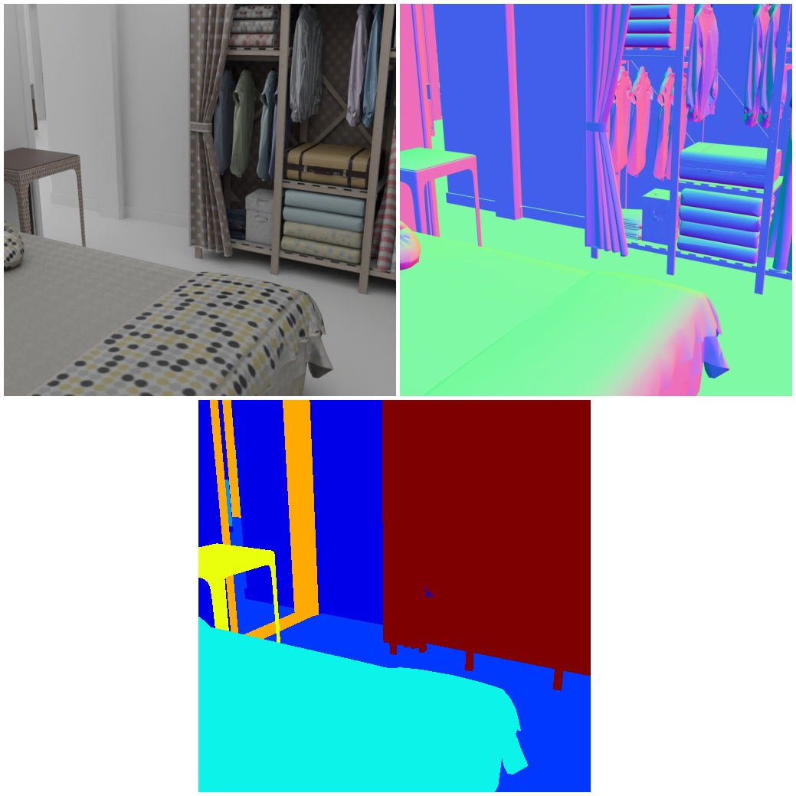
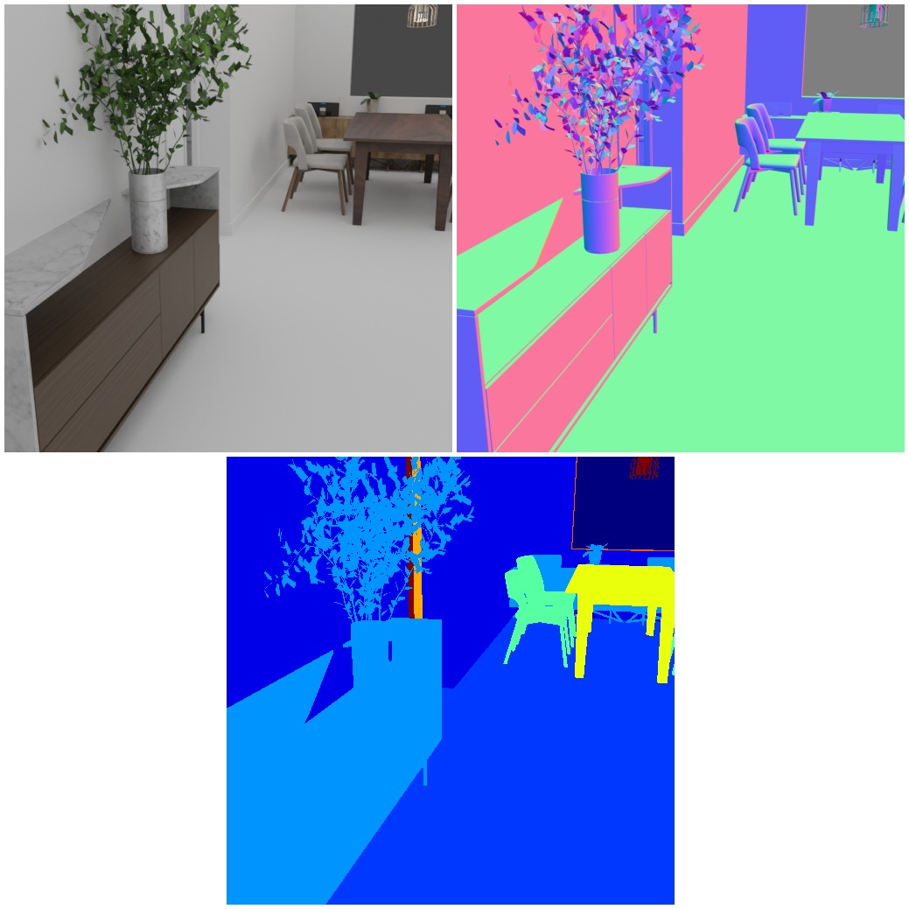

3D Front Dataset¶
 
In this example we explain to you how to use the 3D-Front Dataset with the BlenderProc pipeline. This is an advanced example, make sure that you have executed the basic examples before proceeding to this one.
Get the 3D-Front dataset¶
As you are required to agree to the Use Of Terms for this dataset, we can not provide a download script.
However, we will give you a step by step explanation on how to get access.
- Visit the following webiste and download the “3D-FRONT Terms of Use” as a pdf:
https://tianchi.aliyun.com/specials/promotion/alibaba-3d-scene-dataset - Write an E-Mail to
3dfront@list.alibaba-inc.comwith the content shown below and attach the Terms of Use pdf: - They will reply with three links one for the house, which is referred to as the 3D-Front dataset and a link to the furniture, which is called 3D-Future and lastly one for the 3D-Front-textures. Download all of them and save them in a folder.
- Unzip all files, which should give you three folders one for the houses (3D-FRONT) and one for the furniture (3D-FUTURE-model) and one for the textures. So far we have no use for the
categories.pyand themodel_info.json. - Inside the 3D-FRONT folder you will find the json files, where each file represent its own house/flat. The 3D-FUTURE-model path only has to be passed as second argument, the objects will be automatically selected, same for the 3D-front-texture path.
Dear 3D Future Team,
I hereby agree to the Terms of Use defined in the attached document.
Name: {YOUR NAME}
Affiliation: {YOUR AFFILIATION}
Best regards,
{YOUR NAME}
Usage¶
Execute in the BlenderProc main directory:
blenderproc run examples/datasets/front_3d/main.py {PATH_TO_3D-Front-Json-File} {PATH_TO_3D-Future} {PATH_TO_3D-Front-texture} examples/datasets/front_3d/output
examples/datasets/front_3d/main.py: path to the python file with pipeline configuration.PATH_TO_3D-Front-Json-File: path to the 3D-Front json filePATH_TO_3D-Future: path to the folder where all 3D-Future objects are storedPATH_TO_3D-Front-texture: path to the folder where all 3D-Front textures are storedexamples/datasets/front_3d/output: path to the output directory
Visualization¶
Visualize the generated data:
blenderproc vis_hdf5 examples/datasets/front_3d/output/0.hdf5
Steps¶
- Loads the
.jsonfile:bproc.loader.load_front3d. It creates the rooms and also adds emission shaders to the ceiling and lamps. - Adds camera pose to the scene:
bproc.camera.add_camera_pose(). - Enables normals and distance (rgb is enabled by default):
bproc.renderer.enable_normals_output()bproc.renderer.enable_distance_output(). - Renders all set camera poses:
bproc.renderer.render(). - Writes the output to .hdf5 containers:
bproc.writer.write_hdf5().
Python file (main.py)¶
Front3DLoader¶
loaded_objects = bproc.loader.load_front3d(
json_path=args.front,
future_model_path=args.future_folder,
front_3D_texture_path=args.front_3D_texture_path,
label_mapping=mapping
)
- This imports an 3D-Front.json file into the scene.
- It also needs the path to the
3D-FUTURE-modeland to the3D-Front-texture - It is also possible to set the strength of the lights here, check the top of the Front3DLoader for more information.
Front3DCameraSampler¶
proximity_checks = {"min": 1.0, "avg": {"min": 2.5, "max": 3.5}, "no_background": True}
while tries < 10000 and poses < 10:
# Sample point inside house
height = np.random.uniform(1.4, 1.8)
location = point_sampler.sample(height)
# Sample rotation (fix around X and Y axis)
rotation = np.random.uniform([1.2217, 0, 0], [1.338, 0, np.pi * 2])
cam2world_matrix = bproc.math.build_transformation_mat(location, rotation)
# Check that obstacles are at least 1 meter away from the camera and have an average distance between 2.5 and 3.5
# meters and make sure that no background is visible, finally make sure the view is interesting enough
if bproc.camera.scene_coverage_score(cam2world_matrix, special_objects, special_objects_weight=10.0) > 0.8 \
and bproc.camera.perform_obstacle_in_view_check(cam2world_matrix, proximity_checks, bvh_tree):
bproc.camera.add_camera_pose(cam2world_matrix)
poses += 1
tries += 1
- This samples camera poses in the loaded 3D Front scenes
- It will create 10 different camera poses, based on the
poses - It will ensure that the min_interest_score is above 0.25, which means that there must be a variety of objects in the scene, this avoids that there are pictures of an empty corridor
- The proximity checks have several conditions:
- the camera can not be closer than 1.0 (meters) to any object, be aware that we use a sparse sampling here, which might over look thin objects
- the average of distance values must lie between 2.5 and 3.5 meters
- And there are no background pixels allowed, which means the camera will not look out of one of the open windows or doors
- The location and rotation are only added here to the sampled locations. Each sampled location is in one of the rooms on the floor, we can now add a certain distance from the floor with the location sampling. The same is true for the rotation sampling. Each pose is validated against the criterias at the top and also if it is directly above the floor. So positions above a bed for example will be discarded.